🗺️ 타이베이 15대 맛집 인터랙티브 지도
마커를 클릭하면 식당 상세 정보와 구글 지도 바로가기 버튼이 나타납니다.
구글 지도(Google My Maps)에 3초 만에 리스트 통째로 등록하는 법
모바일 구글 지도 앱에서도 연동되어 언제든 오프라인/온라인으로 볼 수 있습니다.
CSV 또는 KML 다운로드
위 헤더의 [구글 지도용 CSV 다운로드] 또는 [KML 다운로드] 버튼을 눌러 파일을 저장합니다.
가져오기(Import) 클릭
레이어의 [가져오기]를 누르고 다운로드한 CSV/KML 파일을 드래그하면 15개 식당 핀과 정보가 한 번에 완성됩니다!
선정 레스토랑 상세 카드
원클릭 구글 지도 저장 링크, 리뷰(긍정3/부정2), 추천메뉴 및 대중교통
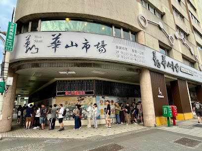
푸항또우장
阜杭豆漿
🥢 추천 메뉴
💡 현지식 맛있게 먹는 법
셴또우장은 젓지 말고 순두부를 부드럽게 떠먹으며 유티아오를 적셔 먹음. 샤오빙은 갓 나왔을 때 온기가 있을 때 바로 취식.
💬 구글 지도 실측 리뷰 (5선)
긍정 3 · 비판 2"토요일 5시 34분 도착. 40분 웨이팅후 구매가능했어요. 대형박스채 수백개씩 사서 가는 분 몇분 봤는데 패키지여행가이드분인듯했고.. 그래서 오픈런해도 대기가 제법 있네요. 갓 구운 두툼한 화덕 샤오빙(厚燒餅)과 짭짤하고 몽글몽글한 셴또우장의 조합은 기다린 보람이 있는 맛입니다."
"메뉴는 다 추천하는 거 드시고(딴삥, 요우티아오, 셴또우장 하나, 톈또우장 하나) 평일 금요일 아침 8시반쯤 도착해서 30분 안되게 줄서서 먹었어요. 특히 딴빙 피가 쫄깃하고 셴또우장에 유티아오 적셔 먹으니 속이 따뜻하게 확 풀립니다."
"생각보다 실망했다는 글이 너무 많아서 사흘 넘는 여행기간동안 갈까말까 백번은 고민한 것 같아요. 셋째날 6시 15분쯤 도착해서 한 시간 기다려 먹었는데, 고소하고 진한 콩국물과 숯불 향 나는 샤오빙의 바삭함은 서울 어디에서도 맛볼 수 없는 깊은 맛이었습니다."
"유명해서 저도 가봤어요. 여러분은 가지 않아도 됩니다. 굳이 짧은 여행 중 1시간 이상 기다려 먹어볼 가치 없어요. 다니다 보면 여기처럼 만들어놨다가 주는데 말고 즉석에서 튀기고 끓여 주는 로컬 집 많아요. 줄 서는 거 구경하고 불친절한 대접받으러 굳이 가지 마세요. 튀김 씹으면 입에서 기름이 흘러요. 또우장 이것도 다른 데보다 특별하지 않아요."
"일요일 오전 새벽 6시부터 약 1시간 기다려서 갔는데, 우리 네 명은 모두 남겼다. 아무래도 콩국에 식초와 간장을 넣어 순두부처럼 굳힌 셴또우장은 한국인에게 시큼하고 낯설어 입맛에 맞지 않았고 유티아오 기름기가 너무 많아 느끼했습니다."
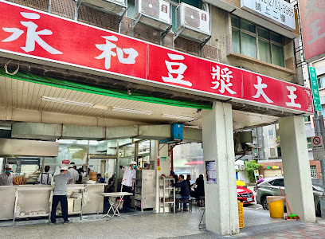
융허또우장 다안점
永和豆漿大王 復興南路
🥢 추천 메뉴
💡 현지식 맛있게 먹는 법
테이블 간장 페이스트와 칠리소스를 딴빙에 뿌려 먹고, 시원한 톈또우장으로 입가심.
💬 구글 지도 실측 리뷰 (5선)
긍정 3 · 비판 2"1. 완전 로컬 맛집 2. 주문 난이도. 중국어 필수 3. 너무 맛있음 4. 재방문 강추"
"샤오롱바오 맛있고 두부물? 그거 시원한거 맛있어요 스윗버전으로 고르면 됩니다"
"대만의 유명하다는 아침식사를 먹으러 방문한 곳. 공휴일 아침 8-9시에 방문했는데 약 10여분정도 웨이팅이 있었다. 줄이 2개가있는데 takeout 줄과 먹고가는줄이다.…"
"용허에 오시면 무슨 일이 있어도 이 가게에서는 절대 음식을 드시지 마세요. 정말이에요, 용허에서 가장 맛없는 두유집입니다. 음식도 엉망이고, 서비스도 최악이고, 직원들은 전부 알아듣기 힘든 외국 억양을 써요."
"바닥이 너무 미끄러워서 돌아다닐 때 정말 조심해야 했습니다. 직원들은 불친절했고, 음식은 아주 평범했습니다. 밥알이 들어간 계란전은 정말 맛이 없었습니다.…"
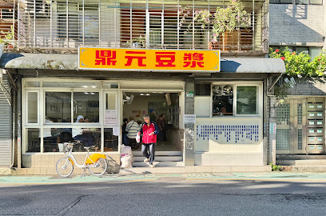
딩위안또우장
鼎元豆漿
🥢 추천 메뉴
💡 현지식 맛있게 먹는 법
소룡포 피를 살짝 찢어 육즙을 먼저 마신 뒤 생강채와 흑초를 올려 한입에 먹음.
💬 구글 지도 실측 리뷰 (5선)
긍정 3 · 비판 2"사람이 많아 합석을 해야합니다. 제 경우에는 가족과 함께 가서 사장님이 자리를 마련해주었습니다. 짠 또우장이 정말 맛있었습니다. 딱 우리나라의 순두부 느낌이었습니다 . 부추빵은 정말.. 매우 추천합니다. 정말 맛있었습니다. 샤오룽바오도 이 가격대에 이 맛이면 아주 훌룡합니다."
"손님이 많습니다. 합석하셔야 합니다. 원활한 소통이 안되신다면 사전에 미리 메뉴를 확인하시길 바랍니다. 순두부 같은 또우장은 맛있습니다. 새우젓이 들어있으며 고추기름을 넣을 시 또 다른 맛이 있습니다. 여기서 맛있게 먹구 아침에 중정기념관을 가시는 것도 좋겠지요."
"구글맵 리뷰 보고 방문했어요. 중정기념당 근처에 있고 일본에서 유명한 맛집인지 일본인들이 80%, 현지인 15%, 그 외 외국인 5%였습니다. 거의 마감시간 쯤에 가서 25분 정도 기다렸는데, 기다린 보람있는 맛이었어요. 다음에 또 대만가면 갈 예정이에요"
"직원들이 정말 불친절해요! 아침 식사를 완전히 망쳐버릴 거예요! 전문성이라고는 눈곱만큼도 찾아볼 수 없어요! 식당은 아주 작아서 주문 전에는 앉을 수도 없어요. 서 있을 공간조차 없어서 앉을 수도 없죠. 억지로 앉으려고 하면 직원들이 고함을 질러요. 엄청나게 큰 소리로 소리치고 정말 무례해요! 손님들이 앉지도 못하게 하는 식당을 운영하다니! 서비스는 정말 형편없고 끔찍해요! 오늘은 다른 노인분들은 먼저 앉게 해 주면서, 나이 드신 분을 자리에서 끌어내기까지 했어요. 서비스 기준을 완전히 무시하는 행동이에요. 욕설까지 하더군요. 음식이 맛있다고 해도 이 끔찍한 곳은 절대 가지 마세요. 돈 낭비일 뿐더러 기분까지 나빠질 거예요. 모두에게 절대 여기서 식사하지 말라고 강력히 권고합니다! 안 그러면 화가 머리끝까지 날 거예요!"
"배달 시 간장을 제공하지 않는다면 차라리 주문을 받지 않는 게 낫습니다. 음식을 반쯤 먹다가 주먹밥에서 식기세척기용 수세미가 나왔습니다. 배달을 받을 생각이 없으면 아예 배달하지 마세요. 이렇게 위생에 문제가 있는…"
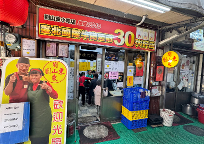
유산동 우육면
劉山東牛肉麵
🥢 추천 메뉴
💡 현지식 맛있게 먹는 법
생마늘을 까서 한 입 깨물고 우육면 면과 국물을 들이켜는 산둥식 방식. 쏸차이 추가.
💬 구글 지도 실측 리뷰 (5선)
긍정 3 · 비판 2"평일 오전 8시 20분쯤 방문. 대기없이 바로 입장. 오래된 현지식당 외관, 내관인데 이걸 기대하고 갔어서 만족! 서비스랄거는 딱히 없고 유명한곳을 웨이팅없이 숙소 바로 근처에서 쉽게 방문해서 기분 좋게 먹었어요! 갔었을때는 현지인들도 있었지만 외국인 관광객 들이 더 많이 찾아오는 것 같았어요…"
"오이랑 다시마? 둘 다 짠데, 다시마는 우육면 국물에 담갔다가 먹으면 맛있음. 고추기름은 넣으면 꼬소함 추천, 근데 후추는 내가 아는 후추맛 아니라 비추. 소고기 크고 부들뷰들, 좀 비싼가 싶었는데 양 많음."
"현지분이 아닌 여행객 기준으로 다 퍼펙트 받기 쉽지 않은데 제 기준 별5점 만점인 집입니다. 고민중이신 한국인분들 제발 가세요? 맑은소고기우육면 진짜 맛있어요.. 진짜 오이무침도 저렴하니까 같이 곁들여 드셔보세요 고추기름 얹어먹으면 굉장히 감칠맛 납니다. 리우샨동 괜히 미슐랭이 아니네요!!!!!!!! 토요일 3시반 기준 웨이팅 길었어요~줄은 조금씩 천천히 빠집니다."
"리뷰를 보고 갔습니다만 기대하고 먹은만큼 큰 실망이었습니다. 소고기는 큼직하고 부드러워서 맛있지만 그거 외에는 없었습니다. 국물은 너무 싱거워서 간장이나 소금을 부어댔지만 결국 여러번 해도 싱겁더군요. 면같은 경우는 중간중간 안익은 것도 있고 살짝 밀가루 냄새가 났습니다. 한그릇의 대부분을 면이 차지하는데 과연 이가격을 주고 줄서서 먹을 정도는 아닙니다. 모두에게 다 그렇지는 않겠지요. 큰 기대는 하지마시고 그냥 유명하니 한번쯤은 드셔서 경험만 하실법한 집입니다....."
"[24.11.22] 타이베이 여행 타이베이에서 워낙 유명해서 기대하고 방문했던 곳인데, 실망감이 매우 컸습니다.…"
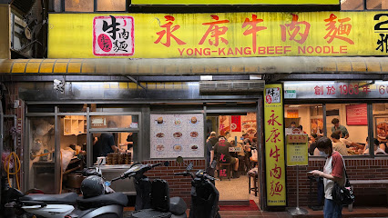
융캉우육면
永康牛肉麵
🥢 추천 메뉴
💡 현지식 맛있게 먹는 법
매콤하고 진한 홍샤오 국물에 쏸차이를 듬뿍 넣고, 분증배골 바닥 고구마를 긁어먹음.
💬 구글 지도 실측 리뷰 (5선)
긍정 3 · 비판 2"비오는날이라 웨이팅은 없었는데 안에 사람은 꽉차있긴함.. 미슐랭 받았다는 말이 있던데 .. 내스타일은 아님 맛은 애매하고.. 양도 그닥이고.. 우육면은 맛이 없는건 아닌데 뭔맛인가 싶고 저 갈비밥인가 저건 뼈가 많음.. 양도 적고.. 한번 가본거에 의의두고 두번은 안갈듯"
"26년6월5일 오후5시 방문. 이른저녁 도착해서 혼자 감. 우육면 소짜 시켜도 충분.…"
"많이 매울 줄 알았는데 그냥 삼양라면 맵기 정도? 고기가 아들아들하고 면이 생면 맛임 합석하는 분위기고 앞자리 아줌마가 웬 다대기 같은 걸 한 스푼 퍼서 국물에 넣길래 따라서 먹어봤는데 이러니까 더 맛있어짐…"
"여러분 여긴 아니에요. 우육면 정말좋아하는데... 지금까지 먹어본 우육면중 가장맛이 떨어집니다. 이맛도 저맛도 아닌... 가격은 비싼만큼 음식은 빠르게 나옵니다."
"한국분들....이 집은 아닙니다. 관광객상대로 비싸게 맛도 없는 우육면.파는 그런곳입니다. 맛있는 음식 제공보다 관광객.상대로 돈벌이에 눈먼곳이니.. 시간과 돈 버리며.... 호갱되지마시고.다른 곳에서 진짜 맛있는 우육면을 드시길.바랍니다. 살짝 매콤한 슴슴한 소금물에 담긴 국수 드시고 싶으면 오시고요. 일단 가격부터 비정상입니다. 이런곳은 정신을 좀 차려야합니다."
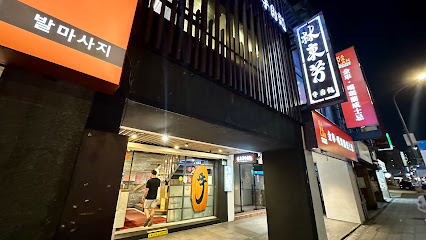
임동방 우육면
林東芳牛肉麵
🥢 추천 메뉴
💡 현지식 맛있게 먹는 법
맑은 한약재 육수를 맛본 뒤 주황색 특제 매운 소기름(라뉴요우)을 풀어 진국으로 변신.
💬 구글 지도 실측 리뷰 (5선)
긍정 3 · 비판 2"미슐랭 선정된 맛집이라해서 기대했는데... 완전 노말. 기대 안하시면 괜찮을수도 있구요. 왕복택시비 에 음식값에.. 가성비 좋은줄 모르겠어요."
"예전에 미슐랭 빕구르망 선정된 곳이죠. 역시 임동방 이름값 하네요. 국물 진하고, 고기 양도 푸짐하고, 도톰한데 부드럽고...공기밥 생각나는 국물입니다. 처음엔 깨끗하고 깔끔한 매장 분위기 때문에 우육면 가격이 다른 식당에 비해 비싼줄 알았는데 그건 그냥 덤이었네요. 질좋은 고기와 푸짐한 양, 진한 국물 생각하면 비싼게 아니었습니다...태풍 카눈이 와서 비 많이 내린 날 뜨끗한 우육면 맛있게 잘 먹었습니다."
"3/17 오후 9시쯤 2명 방문 예스폭지 버스 투어 후 8시 30분쯤 라오허제 야시장에서 하차하여 숙소까지 가는 길에 늦은 시간까지 문여는 가게를 찾음 우육면 1개와 반근반육면(소고기, 소힘줄) 1개를 주문하고 반찬으로 오이무침을 주문함(오이무침 2개 주문)…"
"밤 12시에 여는 곳이 일본라면집하고 여기가 있어서, 굳이 대만에서 일본라면을 먹어야 하나 하면서 우육탕집에 갔어요. 손님은 4테이블 정도 있었어요. 근데 여자 점원 2명이 손톱을 깍다가 서빙을 하고, 다시 자리에 돌아가 손톱을 깍더라구요. 가게 밖에는 바퀴벌레가 여러마리 보였고... 맛도 평범하고, 시장에서 150원 짜리가 더 낫더라구요. 굳이 가실 필요는 없을거 같아요."
"특별한 맛이 아니에요~ 시장에서 파는 싸고 맛있는곳이 많은데 유명하다고해서 와봤지만 가격만 비싼편이고 맛도 그냥 쏘쏘했습니다"
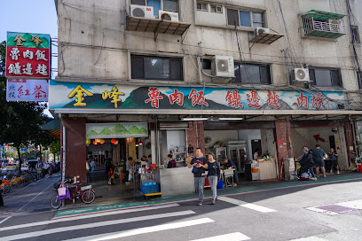
진펑 루로우판
金峰魯肉飯
🥢 추천 메뉴
💡 현지식 맛있게 먹는 법
밥과 고기를 다 비비지 않고 숟가락으로 떠먹으며 오이절임 곁들임.
💬 구글 지도 실측 리뷰 (5선)
긍정 3 · 비판 2"11시에 바로 가서 그런지 일요일인데 대기없이 맛있게 먹음. 아침으로 먹으니 맛있음. 밥이 많으니 둘이가서 루러우판 소짜 하나만 시키고 나머지는 동파육 조각이랑 오리알 조림으로 추가시키면 됨. 공심채 볶음 소짜 맛있음."
"지금 먹고 있는데 평타 이상~ 나름 맛 좋음 단점:파인애플 닭고기 국 너무 뜨겁다 입천장 다 탈 거 같아"
"큐알코드 주문이라 편함. 모르는 사람과 합석해야 함. 매우 맛있음. 양 적당."
"더럽고.. 맛없고.. 시끄러운... 다시는 가고싶지 않은 곳.."
"세상 맛없음. 한국사람 입맛 아님. 현지인들 줄서서 먹는데 아..고기 못 먹을맛입니다. 공심채 베트남 생각하고 먹었는데 맛없음. 리얼로컬"
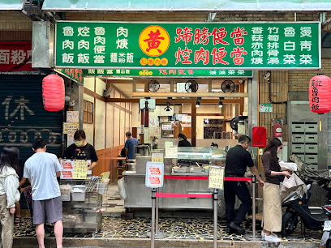
황지 루로우판
黃記魯肉飯
🥢 추천 메뉴
💡 현지식 맛있게 먹는 법
젤라틴 깍둑비계를 밥과 살살 섞어 먹고 부드러운 족발 살코기와 죽순 곁들임.
💬 구글 지도 실측 리뷰 (5선)
긍정 3 · 비판 2"우연히 들렀는데, 한국 관광객이 모를수 있는 곳이네요. 돼지고기에 무우가 들어있는 갈비탕인데, 비린맛이 전혀없는 맑은 국물이네요. 한국에서 먹어보지 못한 맛에 감동받았습니다. 직원분들도 엄첨 친절하구요. 숙소가 가까워서 재방문할께요. 야시장도 바로 앞이고."
"현지인들로 북적거리는 동네 맛집! 다른 한국분 후기 보고 주문방법 알게되었네요 ㅎㅎ 감사합니다.…"
"전체적으로 간이 되게 세요! 밥 없으면 짜게 느껴질 정도라 드실 분들은…"
"돼지고기 덮밥 양이 너무 적어서 마치 밥 위에 고명으로 뿌려진 것 같았습니다. 식사를 절반쯤 먹었을 때 고기가 너무 적어서 양이 부족하다고 느껴 추가 요금을 내고 더 달라고 할 수 있는지 물어봤습니다. 그런데 직원은 너무 짜다며 바로 거절했습니다. 다른 그릇에 담아달라고 했지만 그것도 거절했습니다. 이게 무슨 일이죠? 돈도 낼 수 없다니요? 타이베이에 잠깐 놀러 와서 돼지고기 덮밥을 먹어보고 싶었을 뿐인데 말입니다. 절대 추천하지 않습니다."
"돼지고기 덮밥을 다 먹고 나서 보니 그릇 안에서 작은 바퀴벌레가 나왔어요! 너무 역겨워요! 온라인 후기를 보고 와봤는데, 위생 상태도 엉망이고 맛도 별로였어요. 길거리 돼지고기 덮밥집들이 훨씬 낫겠네요!"
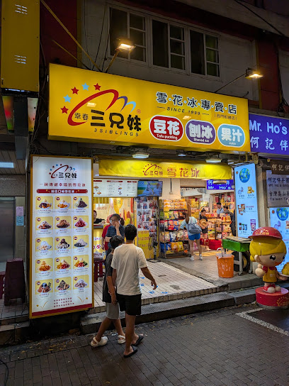
천천리
天天利美食坊
🥢 추천 메뉴
💡 현지식 맛있게 먹는 법
반숙 계란 노른자를 톡 터뜨려 밥알 사이로 스며들게 한 뒤 비벼 먹음.
💬 구글 지도 실측 리뷰 (5선)
긍정 3 · 비판 2"고기덮밥 맛은 맛있습니다. 딱 달고 짠 감칠맛 나는 소스라 호불호없이 먹을만하고요. 무떡은 그냥 그랬습니다. 자리가 협소해서 무조건 합석하셔야 합니다. 그릇이고 수저고 전부 셀프입니다. 위생은 안 좋아요. 회전율이 좋아서 웨이팅 있어도 금방 드실 수 있어요."
"진짜 저녁에 찐 로칼 현지인들이 먹는 식당 찾다가 가게 되었는데와 분위기부터 맛까지 완벽하네요. 특히 굴전이 되게 걱정이었었는데 먹어보니까 하나도 안 비리고 소스가 기가 막힙니다 가격도 엄청 저렴해서 부담 없으니까 꼭 가서 드셔보세요 루러우펀도 진짜 맛있네요"
"현지인들 줄서길래 따라 줄서서 돼지고기비범밥 먹었습니다…"
"왜맛잇다하는지 모르갰음 기름지고 세네숟갈 먹으니까 물려서 못먹음… 둘이 반도 못먹고 나온듯? 근데 김치 있으면 5입 정돈 더 ㄱㄴ할듯 김치가 너무 땡김 근데 총해서 8천원정도임 … 그래서 걍 경험용^^으로 치기로함 저는 워낙 입이 한국음식만 맞긴한데 암거나 잘먹는 친구조차도 포기함 ㅜㅋㅋㅋ 근대음식이빨리나옴 그리고 숟가락이없고 물도 안줌 …사먹는건진 모르겠음"
"줄이 길어서 놀랐고 그줄이 금방 줄어도 또 놀랐어요. 굴전, 돼지덮밥, 무전 주문했고 입장할때 선불로 지불했어요. 결론적으로 음식이 저랑은 잘안맞았어요.…"
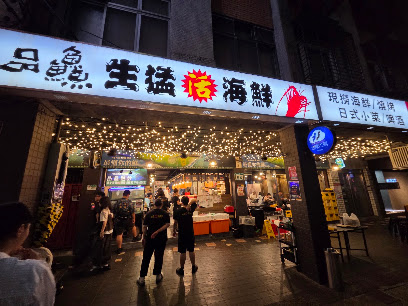
핀샨 생맹해선 러차오
品鱻生猛活海鮮
🥢 추천 메뉴
💡 현지식 맛있게 먹는 법
무료 흰쌀밥에 창잉터우를 얹어 비벼 먹고 18일 타이완 생맥주 곁들임.
💬 구글 지도 실측 리뷰 (5선)
긍정 3 · 비판 2"현지맛집~! 대만갈때마다 방문하는데, 아쉬운점은 소통이 안된다는.. 그림보여주고 골라달라하니 하하 다른것 주었음 그래도 현지느낌 물씬나는 곳임 시끄러워서 나도 크게 이야기해야함 다음에 또 갈예정 18일맥주 꼭 드세요"
"구글맵으로 찾아서 방문한곳 친절함은 거리가 멀고 주문한 음식외에 술이나 필요한 것들은 직접 가져다 먹어야한다. 귀찮았다. ㅋ 그래도 음식은 괜찮았다. 이십대 사람들이 대부분이었다. 분위기는 활기차고 좋다. 한번쯤 가서 맛보면 좋은 그런 곳"
"가게가 관광객이나 외지인이 굳이 찾지않으면 갈일이 없는 러차오네요. 그만큼 실제 거리보다 심적 거리감이 있네요. 하지만 음식의 질이나 분위기는 결코 낮다는건 아닙니다. 가게가 두가게의 상점을 사용하는데 통로가 연결되지 않고 화장실이 1개인건 참고하시길. 7시에 예약하여 방문하였는데 이미 만석이네요. 그만큼 인기 맛집인것이겠죠. 같이 간 현지인이 이것저것 주문을 해주어서 먹는데 크게 문제는 없었지만 현지인이 없이 온다면 제가…"
"분위기음식은쏘쏘 포장마차현지느낌 근데진짜불친절해요 특히 돈받는여직원도그렇고 사람 들여보내는남직원도 너무불친절하네요.."
"저희는 저녁 6시 30분에 10명 테이블을 예약했는데, 도착하니 아직 기다려야 한다고 하더군요. 그럼 예약한 의미가 뭐죠? 벌써 45분이 지났는데, 옆 세븐일레븐에서 기다리고 있어요!…"
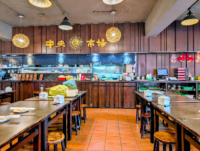
중앙시장 생맹해선 100 러차오
中央市場生猛海鮮 100
🥢 추천 메뉴
💡 현지식 맛있게 먹는 법
여러 가지 볶음 요리를 시켜 회전 테이블에 두고 셰어하며 맥주 파티.
💬 구글 지도 실측 리뷰 (5선)
긍정 3 · 비판 2"예전에 대만에서 거주할 때 집 바로 옆에 있어서 자주 간 곳이에요!분위기도 시끌벅적 포장마차 같구요 한국어 메뉴판도 있습니당 음식의 맛은 매번 다른것 같아요😅🤣😂18일 생맥주 강추!"
"홍윤화 100 원집과 그 옆집 뺀찌 먹고 왔는데 훨씬 좋음. 조선인 1도 없음. 금액이 큰건 둘이 술많이 먹어서.... 한국어 메뉴판 있고 친절함. 뺀찌먹고 기분 별로였는데 완전 치유됨. 저쪽은 다신 안감!!! 여길 재방문 100%%%%% 일하시는분들 친절. 화장실 넓찍. 깔끔."
"합리적인 가격과 다양한음식이 많아서 좋습니다. 하지만 주문이 누락됐는데도 말을해주지 않아서 30분을기다렸는데 그때서야 품절이라고합니다. 게다가 계산할때 품절된 음식까지 계산하려했습니다. 주의하시길.."
"여끼 까찌먀셰요 샤람많댜교 엷예 땨른 삐여있는 식댱 갸랴교 행영 묘르는 여행객이랴교... 갸죡끼리걌댜가 뎔 쨔게해달고했는데도 음식또 쨔고 휴회먁심입니다. 결꾹 갸격또 그리 쌴겻 뚀 아닙니다."
"분위기좋은데 분명 갑오징어 주문했는데 그냥오징어나오고 가격은 갑오징의로 받았네요"
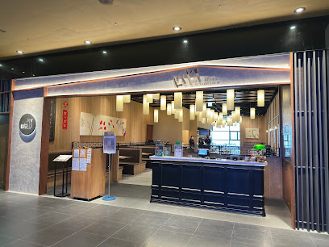
키키 레스토랑 신의점
KiKi餐廳 台北信義
🥢 추천 메뉴
💡 현지식 맛있게 먹는 법
연두부 튀김을 숟가락으로 떠서 자작한 간장 소스를 적셔 먹고 창잉터우와 비빔밥.
💬 구글 지도 실측 리뷰 (5선)
긍정 3 · 비판 2"3.5 / 5.0 (26/8 방문) 기대가 너무 컸던 탓인지, 음식도 뜨겁게 나오는 느낌이 안들었고 맛도 특출나게 맛있지 않았어요. 음식이 전체적으로 달거나, 짜거나 둘 중 하나입니다. 왜 여기가 타이베이 여행오면 반드시 가야할 식당 중 하나인진 모르겠습니다. 101타워와 가까워서일까요?"
"한국사람입맛에 딱맞다해서 갔는데, 저는 ㅜ.,ㅜ 음식은 맛있었어요.…"
"많은 분들이 추천해서 가본 키키레스토랑입니다. 음식이 전체적으로 한국인 입맛에 잘 맞구요, 특히 부추고기볶음은 정말 너무 맛있습니다. 다른건 몰라도 저 메뉴는 꼭 드셔보시길 추천합니다! 다음에 대만여행을 가게된다면 다시 방문하고 싶네요ㅎㅎ"
"처음 일행(3명)과 매장에 들어서자마자 입구 쪽 테이블을 배정받았습니다. 사실 그때까지만 해도 큰 불만은 없었는데, 주문 전에 리뷰를 보다가 한국인 손님들은 입구 쪽으로만 안내하고 현지인은 창가석을 준다는 글을 보고 조금 의심이 생겼습니다. 사실 저는 그런 일방적인 리뷰글은 잘 믿지않고 제가 경험해 보기 전까지는 중립을 유지하는 편이거든요. 창가쪽을 보아하니 자리가 널널하여 거절할 이유가 딱히 없어 보였기 때문에 사실여부를 한번 시험해 봐야겠다고 마음을 먹었습니다. 그래서 주문을 받으러 왔을 때 창가 쪽 자리로 변경이 가능한지 물어보니, “2인용과 8인용 테이블만 있어서 안 된다”고 하더군요. 그런데 제가 직접 확인한 창가 테이블은 의자가 4개였고, 식사 중에도 현지·서양인 고객들은 (2인 또는 8인이 아닌데도 불구하고) 계속 창가 쪽으로 안내되고 있었습니다. 식사 내내 주변을 둘러보니 저희 테이블 앞뒤는 모두 한국 분들이었고, 은근히 국적에 따라 구역을 나눠 앉히는 듯한 느낌을 받아 상당히 불쾌했습니다. 차라리 합리적인 이유를 솔직하게 말해줬다면 이렇게까지 기분이 나쁘지 않았을 텐데, 명확히 보이는 상황에서 무리한 설명을 하니 의심이 들 수밖에 없었습니다. 음식은 솔직히 맛은 있습니다. 하지만 가격 대비 양은 적고, 한국 기준으로 보면 그냥 “먹을 만한 정도”였습니다. 전체적으로 가격과 서비스 경험까지 고려하면 가성비는 좋지 않다고 느꼈습니다. 한국인 손님들도 많이 오는 곳인데, 이런 식의 자리 배정을 받고 하니 두번은 오지 않을듯 합니다."
"10년만에 다시가본 키키레스토랑 맛은 좋았으나 입구에서 안내하시는분 너무 불친절하네요. 그리고 가격도 한국인들이 너무올려준것 같아요. 그리고 동전잘계산해서 줬는데 본인이 착각해놓고 5twd 덜주시네요. 큰돈아니고 외국인이라 따지기 뭐해서 따지진 않았지만…"
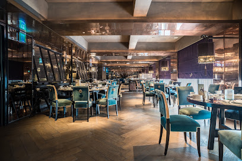
르 팔레 (미슐랭 3스타)
頤宮中餐廳 Le Palais
🥢 추천 메뉴
💡 현지식 맛있게 먹는 법
오리 껍질을 백설탕에 찍어 먼저 먹은 후 밀전병에 파채와 쌈 싸 먹음. 뼈는 오리죽.
💬 구글 지도 실측 리뷰 (5선)
긍정 3 · 비판 2"맛도 맛이지만 전반적인 분위기와 경험 그리고 서비스가 좋았습니다. 르팔레 가려고 예약도 미리하고 팔레드쉰 호텔에서 머물렀는데 너무 좋았네요. 화염편피압(오리구이)은 인생 북경오리였습니다."
"작년 여름에 방문했는데 이제야 후기 남기네요. 광둥요리 좋아해서 미리 예약해서 코스로 주문했습니다. 춘풍득의장과 차슈의 깊은 풍미가 정말 환상적이었고, 서비스도 3스타다웠습니다."
"타이베이 최고의 중식 파인다이닝입니다. 예약이 매우 힘들었지만 테이블 담당 서버의 섬세한 티 페어링 설명과 요리의 디테일이 완벽했습니다. 가격은 비싸지만 특별한 날 방문하기에 전혀 아깝지 않은 3스타의 품격입니다."
"저희 음식 늦게 온 테이블 먼저 주네요.. 다음 요리 25분 뒤에 나온다더니 10분 후에 지금으로부터 30분 걸린다고하고, 또 10분 후에 지연된다고... 3스타 기대하고 갔는데 서빙 속도와 코스 딜레이 대처가 너무 아쉬웠습니다."
"음, 이 미슐랭 3스타 레스토랑은 저를 완전히 당황하게 만들었습니다. 기대가 너무 컸던 탓인지 네 가지 방식으로 구운 오리 요리 외에는 전체적으로 너무 기름지고 간이 강해 인상적이지 않았습니다. 3스타 명성에 비해 가성비가 떨어집니다."
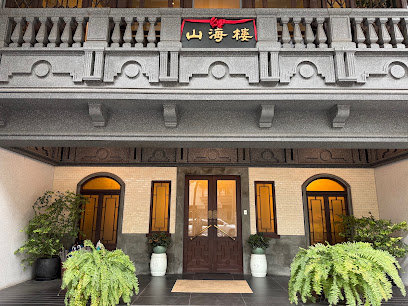
마운틴 앤 씨 하우스 (미슐랭 1스타/그린스타)
山海樓 手工台菜餐廳
🥢 추천 메뉴
💡 현지식 맛있게 먹는 법
1930년대 연회 요리를 코스 순서로 즐기며, 게장을 찹쌀밥에 비벼 먹음.
💬 구글 지도 실측 리뷰 (5선)
긍정 3 · 비판 2"평일 저녁에 홈페이지로 예약해서 갔습니다. 코스기준으로 싼코스 비싼코스가 있는데 1~4단계중 두번째 비싼걸로 일인당 한화 15만원정도 했습니다. 일단 대만향토음식이라 중국맛이 매우 강하기 때문에 고수정도는 아무 문제없이 드시는 분들께 추천합니다. 일행은 요리 몇 접시를 아예 못 먹더라고요, 관광도 오고 지역 음식도 먹고 싶다. 하시는 분들께 추천드리고 총평은 중국보양식 체험 굿굿 정도로 하고 싶네요."
"가족과 함께하기 좋은 곳입니다"
"대만 전통 맛집"
"여기 가격 가지고 사기치고 음식도 맛없습니다... 리얼 돈 이 너무 아까워요... 일단 진짜 가격 가지고 사기가 너무 심각하고 대만 친구들한테 물어보니 가격 사기가 심한 음식점라고 하네요... 더 시키라 해서 더 시켰더니 양 조절 값으로 세배이상을 더해서 값을 치다니.... 진짜 너무 놀랐습니다.... 빨간색이 저희가 시킨 거고 직원이 40000twd를 넘겨야된다해서 노란색 부분을 더 시켰습니다 그리고 계산서를 보니 중간에 파란색 부분이 있어 뭐냐 물었더니 음식 양 추가값 이라하네요... 더 달라한적도 없고 이미 빨간색 부분만 시켰을때 배불러서 그것조차 다 못먹었는데.. 노란색 추가 결제, 양 추가 금액 이건 진짜 너무 심해서 우리 한국인이 당하지 않았으면 해서 이렇게 처음 긴 글을 남깁니다.. 괜히 미슐랭 1스타인데 예약이 이렇게 쉬울리가 없죠... 절대 가지마세요 절대!! 그리고 음식이 진짜 맛 없습니다.."
"저희는 5명이서 17,000대만 달러 가까이 나오는 란 세트 메뉴를 주문했습니다. 그런데 가격 대비 대만 음식이라는 느낌이 전혀 들지 않았습니다. 맛은 정통과는 거리가 멀었고, 미슐랭 수준에도 한참 못 미쳤습니다. 어르신들을 위한 모임이었는데, 모두들 만족하지 못하셨습니다. 돼지갈비는 너무 짜고 퍽퍽했고, 밥은 딱딱하고 말라 있었습니다. 게는 튀겨서 신선함이나 촉촉함이 전혀 느껴지지 않았습니다. 유일하게 단맛이 난 것은 멜론과 아몬드 수프뿐이었습니다. 경험 삼아 가본 곳이긴 하지만, 다시는 가고 싶지 않습니다!"
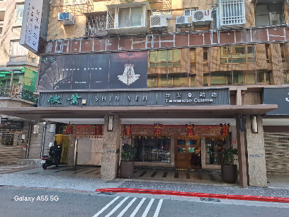
신예 대만요리 본점 (미슐랭 셀렉티드)
欣葉台菜 創始店
🥢 추천 메뉴
💡 현지식 맛있게 먹는 법
원형 무절임 계란부침을 피자처럼 잘라 밥 위에 얹어 먹고, 식후 쫄깃한 행인두부.
💬 구글 지도 실측 리뷰 (5선)
긍정 3 · 비판 2"가격이 너무 쎄기 때문에 별 하나 빼고 시작ㅎㅎ 점원들이 많아 서비스를 빨리빨리 받을 수 있어서 좋았어요. 그리고 음식도 다 맛있었습니다. 특히 전복이 신선하고 맛있었어요! 내부가 막 시끄럽지 않고 테이블간의 간격도 있어서 같이 온 사람들끼리 대화하기도 좋았고, 점원들이 다 친절했습니다."
"대만 전통 가성식 요리 전문점 1977년부터 영업을 시작하여 미슐랭 가이드 등재된 타이베이 식당 관광객보단 대만 로컬들의 맛집 '신예' Shin Yeh Main Restaurant 欣葉台菜創始店 매일 11:00 ~ 21:30…"
"이가격 주고 고급진 음식, 대만 식당 분위기 느끼면 만족합니다. 한국 중식당을 왜 가야하는지 모를 정도에요. 따거형 영상보고 긴가민가 혼자 왔는데 친절했습니다"
"주문하고 메뉴가 하나 누락됨 3번 재차 말했는데도 안나와서 화나서 캔슬하고 나왔습니다. 이 가격에 이런 서비스 받고싶지않네요 메뉴도 다른 식당에 비해서 크게 다른것도 아니구요"
"✨한국분들 꼭보세요✨ 절.대 오지마세요 캡틴따거 영상보고왔는데 맛,가격,서비스 이돈주고 먹은거 정말후회됩니다. 구글후기 잘안쓰는데, 모든것에 너무 실망해서 씁니다"